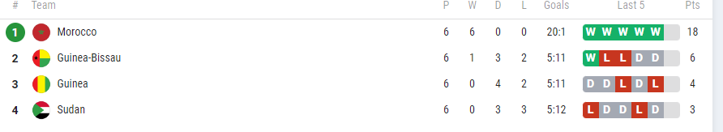
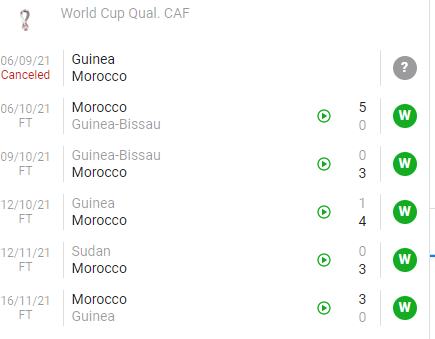
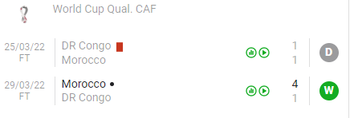
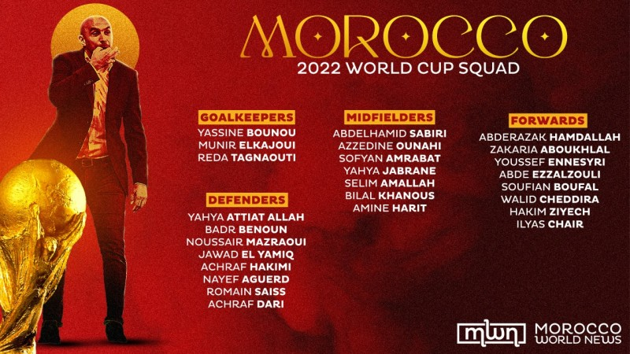

Équipe du Maroc de football


Description
L'équipe du Maroc de football, surnommée « les Lions de l'Atlas », représente le Maroc dans les compétitions internationales masculines de football. Elle a été créée en 1916 et son premier match officiel a eu lieu en octobre 1957 contre l’équipe d’Irak (score : 3-3).
Elle a participé à 18 phases finales de la Coupe d'Afrique des nations, qu'elle a pu remporter qu’une seule fois en 1976 . Elle est arrivée en finale en 2004 et a été classée 3e en 1980. En coupe du monde 1986, l’équipe du Maroc a pu se qualifier au premier tour après s’être qualifié en phases de poule sur une prestation digne des plus grands. En rencontrant l’Allemagne au premier tour, le Maroc s'incline 1-0, à la suite d'une erreur de placement du mur lors d’un coup franc fatal à la fin du match. Depuis cet exploit, le Maroc a été l’un des seuls pays arabes et nord africains à atteindre ce stade du tournoi.
Au niveau mondial, l'équipe a participé à six phases finales de la Coupe du monde de football, son meilleur résultat étant d'atteindre les huitièmes de finale (défaite 0-1 contre l'Allemagne en 1986)
Le parcours de la selection marocaine lors des eliminatoires de la coupe du monde
Casablanca – L’équipe nationale de football a disputé huit matches avant de décrocher sa qualification pour le prochain mondial au Qatar, dont six en phase de poule et deux lors du dernier tour.
Lors de la phase de poule, les Lions de l’Atlas avaient réussi un carton plein en s’imposant lors de leurs six matches de groupe, contre la Guinée Bissau, la Guinée et le Soudan.

La première sortie des hommes de Vahid Halilhodzic fut contre le Soudan. Elle s’était soldée par une victoire 2-0 des nationaux, avant de récidiver à domicile en match retour (3-0).
Les coéquipiers d’Achraf Hakimi avaient également battu la Guinée Bissau (5-0) lors de la 2è journée, avant de l’emporter 3-0 pour le compte de la 4è journée.
La Guinée a été la seule sélection à réussir à marquer un but dans les camps de l’équipe nationale, mais cette réalisation a été insuffisante pour empêcher la victoire des Marocains (4-1).
Lors de la dernière rencontre contre le Syli national, le Maroc s’est imposé 3-0, totalisant ainsi 18 points en tête de la poule I.
La ligne offensive marocaine a inscrit 20 buts contre 1 seul encaissé. Ayoub El Kaabi a été le meilleur buteur de l’équipe nationale avec 5 buts, suivi de Rayan Mmayee (4 buts).
A la faveur de ces bons résultats, le Maroc avait amélioré son classement FIFA, pointant à la 28è place mondiale, derrière le Sénégal.

22 janvier dernier, le tirage au sort du dernier tour des éliminatoires avait donné lieu à la double confrontation Maroc-RD Congo.
A l’aller, la RD Congo et le Maroc n’ont pas pu se départager (1-1). Au retour, les nationaux l’ont emporté 4 à 1, signant ainsi leur sixième participation au Mondial, la deuxième d’affilée après Russie-2018.

La liste convoquée du Maroc
